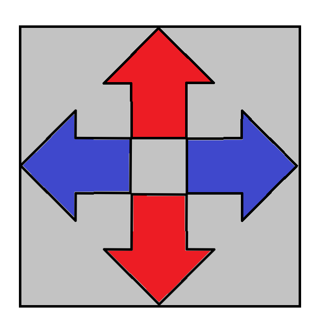
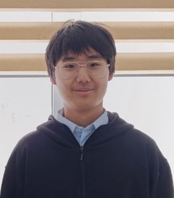
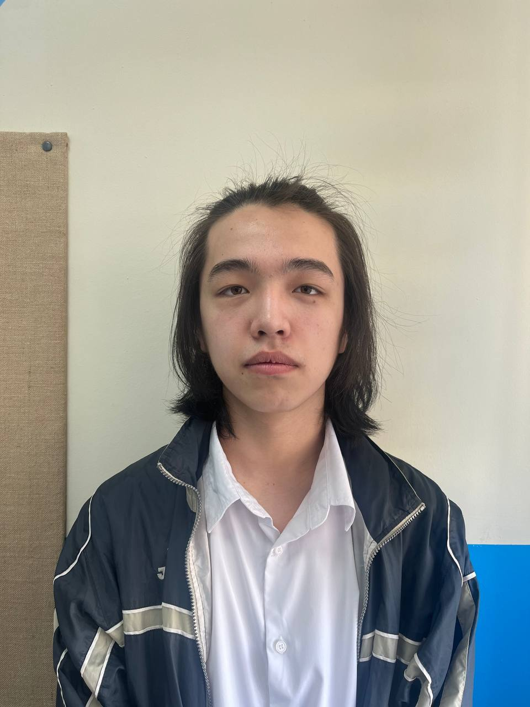
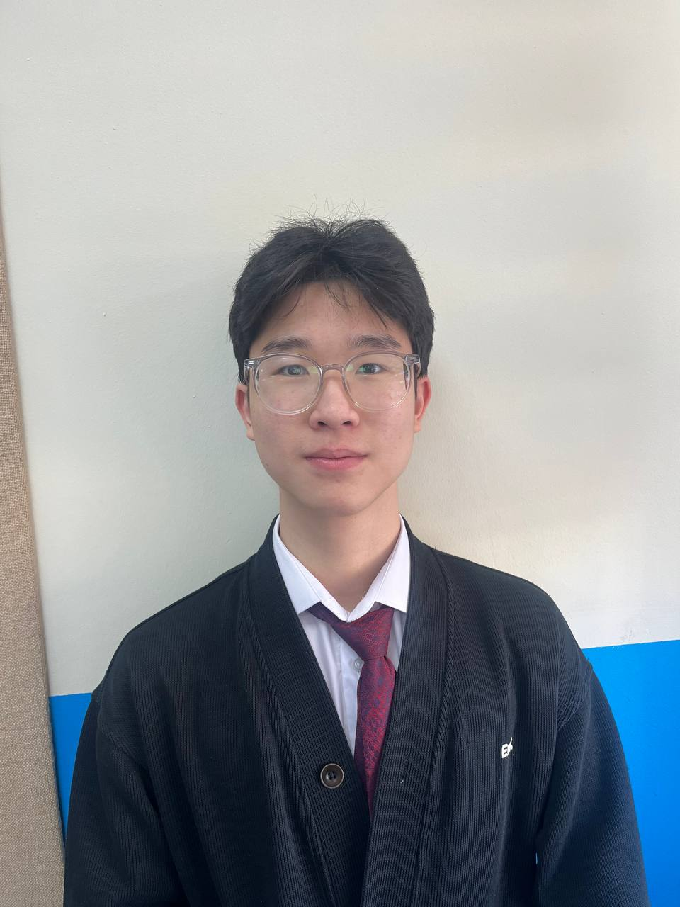

Description
In our days there are many people with obesity. So, our project aims help these people. Project is a pad that will help people to lose weight. This pad will allow users to play a rhythm game where they need to press arrows in time to the music and earn points. During the game, due to its intensity and addictive gameplay, people will not even notice that they are losing weight. Also, our project can be used by people with normal weight that just want to play it.

Pad
Pad will has 4 arrows: up, down, left and right. Buttons will be pressed by heavy people, so they will withstand a lot of weight. Pad will be connect to computer or any other device wirelessly. Demo version of pad will be made from Arduino and plywood.
Gameplay
The arrows that players need to press will come out from the bottom and move upward. When the arrow is in the right spot, player must press the corresponding button on the pad. The more accurately player press the button, the more points he will receive.
Final sketch
Our Sponsors

Esbolat Baurzhan is our sponsor. You can read inteview with him there.
About the authors

Narimbet Zhalgas is responsible for technical component of the project. His motivation is make his wish come true and help people.

Maidanbek Rasul is responsible for design and appearance of project. Make the school a more interesting place, and add a station to unwind in a routine school life.
Future improvments and opportunities
1. In future our project can be distibuted as arcade machine.
2. Use better materials.
3. Create a separate application with music that will work only with our pad.
 Gameplay
Gameplay